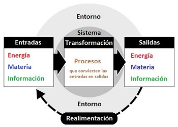
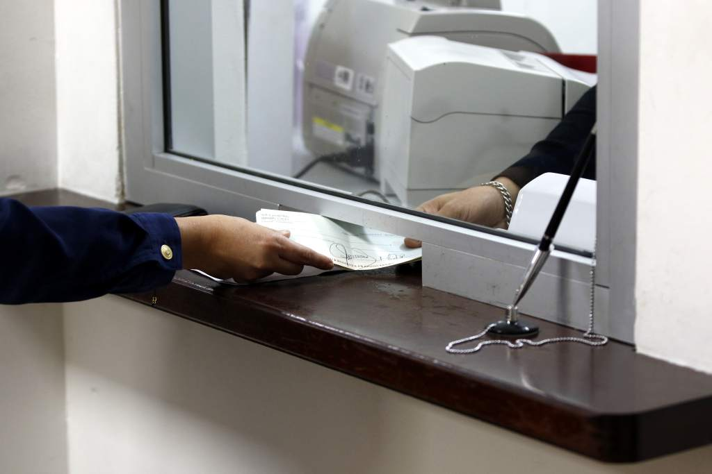
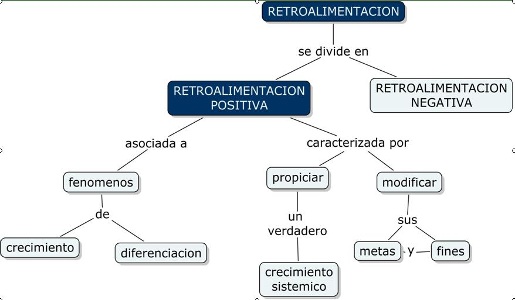

1.1Entrada
Es un Sistema de informacion, la entrada consiste en recopilar y capturar datos primarios.
Cuando se elaboran cheques de pago, por ejemplo, en un sistema universitario los profesores
deben proporcionar las calificaciones de sus alumnos para que sea posible reunirlas en un
reporte semestral o trimestral y el estudiante pueda acceder a ver su nota final
La entrada de datos puede ser de muchas formas.
Por ejemplo llamada telefonica, encuestas, entre otras, pero la entrada esta limitada
por la salida deseada a optener ´por el sistema.
Las entradas pueden ser, efectuarse de forma manual o automatizada
pero independientemente del metodo de la entrada que se utilice,
la exactitud de la entrada es decisiva para optener la salida deseada.

1.2 procesamiento
Se puede decir que es la conversion o transformacion de datos en salidas utiles:
puede implicar ejecutar calculos, realizar comparaciones entre otros procesos
El procesamiento puede llevarse a cabo de manera manual o con la asistencia computadoras
por ejemplo en el caso de las calificacion de un estudiante el docente introduce algunos datos numericos
y la computadora realiza en calculo. Otro ejemplo es calcular pagos a empleado,
este puede efectuarse unicamente introduciendo algunos datos y dejar que la computadora
realize el calculo como deduccion de Seguro Socia, RAP, prestamos, dias faltados y sumar horas extras
entre otros
1.3 Salida
La salida involucra producir informacion util, por lo general en forma de documentos
y/o reporte. Las salidas pueden ser cheques de pago de empleados, reportes dirigidos
a administradores, informacion para bancos, organismo gubernamentales y otros grupos
en algunas ocaciones la salida de un sistema es la entrada de otros; por ejemplo la salida
del procesamiento de pedido de ventas sirve de entrada a un sistema para elaborar las facturas
de los clientes
La salida puede producirse por diversos medios, en el caso de las computadoras
tenemos como dispositivos de salida mas comunes impresoras y pantallas
La salida tambien puede ser un proceso manual, pues a menudo requiere informes y documentos manuscritos.

1.4 Retroalimentacion
En sistema de informacion, la retroalimentacion es la salida que se utiliza para hacer cambios
en actividades de entrada o procesamientos. La precencia de errores o problemas
podria necesitar corregir datos de entrada o modificar un proceso.
La retroalimentacion es de gran importancia para administradores y tomadores y decisiones
por ejemplo, un administrador podria utilizar esta retroalimentacion para decidir
el pedido de mas articulos. Los nuevos pedidos para el reabastecimiento del
inventario se convertirian entonces en entrada del sistema. en este caso
el sistema de retroalimentacion reacciona ala existencia de un problema
y alerta al administrador acerca de la escases de ciertos articulos
del inventario. Ademas un sistema de computacion tambien puede adoptar
un metodo proactivo y prever futura ocurrencia de algunos hechos con el proposito
de evitar problemas.
